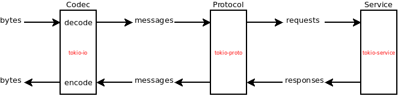
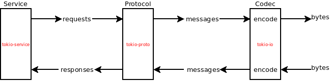

Tokio
This chapter gives an overview of the Tokio stack. I'll assume that you understand what futures are and how they work. If not, I recommend reading this excellent blog post.
Disclaimer: Async IO and event loops are complex topics that I don't pretend to understand. I just know some basic concepts that I'll try to explain with my own words. Here is the thing: you don't need to understand these topics to use Tokio, and that what makes it awesome in my opinion.
tokio-core
Let's start with the main piece of Tokio:
tokio-core. tokio-core provides two things:
-
a
tokio_core::netmodule that provides TCP/UDP utilities. These utilities are intended to be similar to thestd::netones, but they are designed to be asynchronous: they are not blocking. For instance,std::net::TcpStream::connectblocks until the connection is established (or fails to be established) and the outcome is returned, whereastokio_core::net::TcpStream::connectimmediately returns a future that can be polled until it finishes. -
a
Core(aka "reactor" or "event loop") which runs futures. We can already run futures with threads (viastd::thread::spawnor pools of threads (viafutures_cpupool), so why use an event loop instead? I'm not entirely sure myself, but here are a few hints:- Threads are expensive when there are many of them, due to context switches. You don't want to spawn thousands of threads, especially for IO extensive work, since most of them are going to spend most of their time waiting anyway.
- Efficiently managing multiple threads is hard. Tokio's event loop handles this for us. I don't need to know how many threads there are, or which ones should be parked or unparked.
tokio-io, tokio-proto, and tokio-service
tokio-core is quite minimalistic, but tokio also provides a few crates that
make it easy to implement some common services, such as client and servers for
request/response based protocols.
tokio-iocontains traits and types to work asynchronously with streams of bytes.tokio-protoimplements some logic that is common to many protocols request/response based protocols.tokio-serviceprovides aServicetrait implements how a request is handled.
Here is an illustration of how these crates are used together to implement a server:

The server receives a stream of bytes from a socket. A Codec reads this
stream and decode meaningful messages. These messages are then passed to the
Protocol, which forwards the requests to the Service. The Protocol is
kind of a black box, but we can imagine that for multiplexed protocols (ie
protocol for which requests have an ID), it keeps track of the IDs and makes
sure responses are sent with the ID of the request they correspond to. The
Service handles the request and returns a response, which is in turn handled
by the Protocol, which passes it to the Codec that sends it.
The stack is quite similar for a client:
